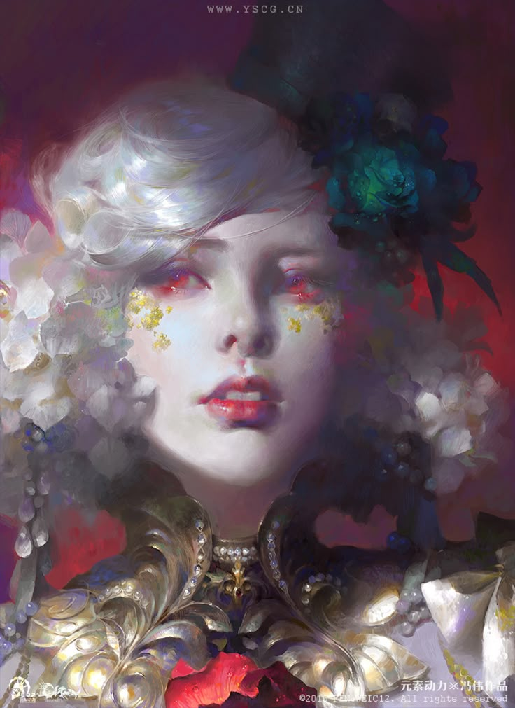

Vampiros

O vampiro clássico é aquele definido como corpo morto que, segundo tradição lendária, à noite se reanima e
sai do túmulo para sugar o sangue dos vivos. Mas nessa realidade, Vampiro é o nome dado a um tipo específico
de canibal, que acredita tão fielmente que o sangue e a carne são a resposta pra tudo, que no final,
realmente acaba se tornando a resposta, se moldam a ideia do consumo de carne humana, e como parte dos
rituais estranhos envolvendo consumo de sangue, de forma cíclica, a fome os ataca de madrugada, e como um
extinto, atacam. Não é luxúria, é necessidade.
Os vampiros habitam além das cúpulas, em ruínas esquecidas pelo tempo. Ali, à espreita, aguardam jovens
aventureiros que ousam explorar seu território, prontos para se alimentar, Porém preferem atravessar as
barreiras das cúpulas para caçarem humanos sob a noite.
A origem deles é conhecida entre os próprios vampiros, Helena e Olivier, um casal que tentou sobreviver fora
dos muros, obtiveram um destino cruel, se transformando nos pacientes zero da fome por sangue. A partir
deles, a maldição se espalhou, dando início a uma linhagem que cresceu e se consolidou como uma verdadeira
família de vampiros.
Helena e Olivier
A família habitava um prédio abandonado, reconstruído com a ajuda de outros vampiros. Ali vivia uma
comunidade de pelo menos uma centena deles, todos submissos e devotos aos seus líderes. Helena e Oliver
conduziram os vampiros a essa realidade insana, encarnando de forma literal o conceito de soberba,
executando rituais e reproduzindo símbolos com significados variados, mas o principal sinal rabiscado por
eles, é o “símbolo do consumo" que é um sigilo sagrado, segundo os vampiros, responsável por manter sua
existência nesse mundo.
(Mesmo não sendo literalmente vampiros, adotaram alguns costumes clássicos como uma decisão unânime, por
exemplo, pela falta de camas em bom estado, começaram a desenterrar cadáveres de antigos cemitérios para
usar o caixão como cama.)
Vampiros
- Interpretação+4
- Intimidação+3
- Agilidade+3
- Mental−3
- Resistência−2
Infecção Vampírica Você cê repassa o espírito vampírico
temporariamente, deixando a vítima com uma sede de sangue inexplicável,
a vítima zera a inteligência e ganha 1d4 de força ou agilidade, como foi você que à infectou, você ganha
controle das ideias dessa pessoa também.
No final da cena, a pessoa perde o espírito vampírico, se cansa e desmaia